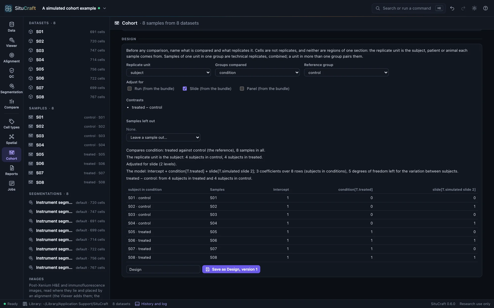
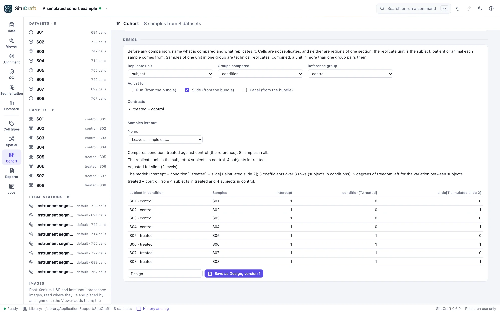

The design
Before any comparison of groups, the design names what replicates what: the subject (or patient, or animal) each sample comes from, the groups compared, and what else differs between samples. SituCraft refuses a design it cannot estimate, or whose groups a batch could explain, and says why.
The replicate unit
A comparison of groups asks whether the groups differ by more than their members differ among themselves. The members are the replicate units: the subjects, patients or animals the samples come from, each one biological replicate. Cells are not replicates (thousands of cells of one section are one subject's cells), and neither are regions of one section. The design's Replicate unit is the field that names them, subject by default; see Describing the samples.
- Technical replicates: a unit's samples in one group, such as two sections of one subject's tumor, are one replicate; their numbers are combined before any test.
- Pairing: a unit in more than one group, such as a subject before and after treatment, is compared with itself: the units enter the model, and the comparison rests on each unit's own change.
- Regions of one section given different units are refused: they share a subject, a slide and a run. Give them one unit (their samples are combined), or compare sections.
Pseudo-samples, for teaching
To try a cohort's comparisons on a single section, its regions can be kept as separate units by checking Regions of one section as pseudo-samples, for teaching only, which the design offers when the samples include regions. The design is then kept rather than refused, and says in its notes and its words that its units are pseudo-samples. Every comparison made of it carries a warning: its tests describe the section's regions, and their p-values are not evidence about subjects, of whom one section is one. The Breast example's worked example Places in one section are not subjects does this with three regions of its stroma and three of its tumor (see Worked examples).
Groups, contrasts and covariates
Groups compared is the field whose values are the groups, condition by default, and the Reference group the one the others are compared with (the first in alphabetical order if not chosen). Each group is compared with the reference unless other Contrasts are added, such as one treatment against another.
Adjust for adds covariates: any field of the samples (a number as it is, text as a factor), or the bundles' run, slide or panel. A covariate is one value for a unit in a group. Samples without a value of a field the design reads are left out, and the design says which; Leave a sample out… leaves one out with its reason, which the design keeps.
The design in words and as a matrix
The design is said in sentences: what is compared, how many units each group has, whether it is paired, what it is adjusted for, and how many degrees of freedom are left for the variation between units. Below them is its matrix: a row for each unit in each group, with its samples, and a column for each of the model's coefficients.
The coding is treatment coding, as patsy and R write a model formula's: an intercept, then for each factor a column of ones and zeros for each level but its reference (the levels in alphabetical order, its first the reference unless chosen), named field[T.level], then each number as it is. For the same formula the matrix is patsy's, column for column.


What is refused
A design that cannot be estimated, or whose answer would not mean what it says, is refused, and the view says why:
- A group of fewer than two units: the variation between units cannot be measured.
- A covariate confounded with the groups or another term: its columns are combinations of those before them (every sample of batch B1 in control and every one of B2 in treated, say), so its effect cannot be told from theirs.
- The groups confounded with a slide, run or panel the design does not adjust for: each holds one group only, so a difference between the groups could be the batch's. A batch that holds the groups unevenly is noted instead.
- No degrees of freedom left: as many coefficients as rows.
- Regions of one section as separate units (above), unless they are marked pseudo-samples for teaching, and a covariate with two values for one unit in one group.
A design with few degrees of freedom left (one or two) is kept but noted: its estimates of the variation between units will be rough.
The program refuses the same designs when a comparison is asked of it directly (by remote control, say): a group of one unit, a unit in two rows of one group, and regions of one section as separate units (unless the design marks them pseudo-samples). Each would make a test of cells rather than of replicates, and cells as replicates find differences that are not there (see Error rates).
Saved designs
Save as …, version … keeps the design in the project as a version of its name, with the samples as they were (each one's unit, group and covariates) and the samples left out with their reasons. The project tree lists the designs; a saved design whose samples have changed since says so, and a new version records them as they are. Only a design that can be used is saved.
By remote control, design makes a design from its unit, group, reference, contrasts, covariates and samples left out (and pseudo_samples for teaching), answers it (in words, its rows and matrix, its degrees of freedom, and why it cannot be used if it cannot), and with save keeps it. See Remote control.